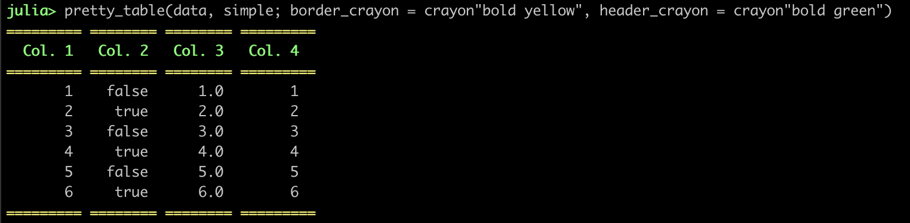
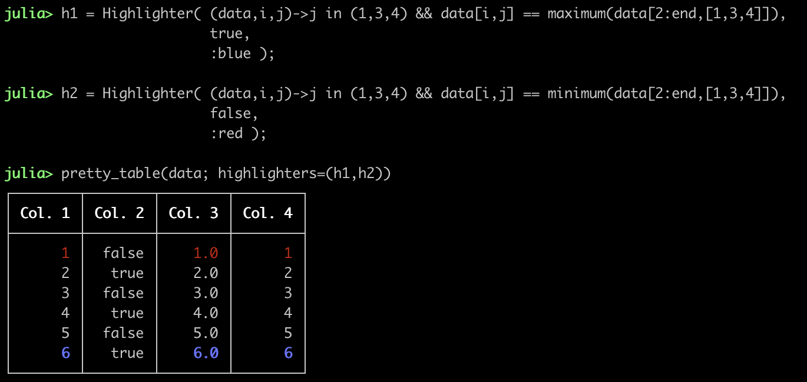
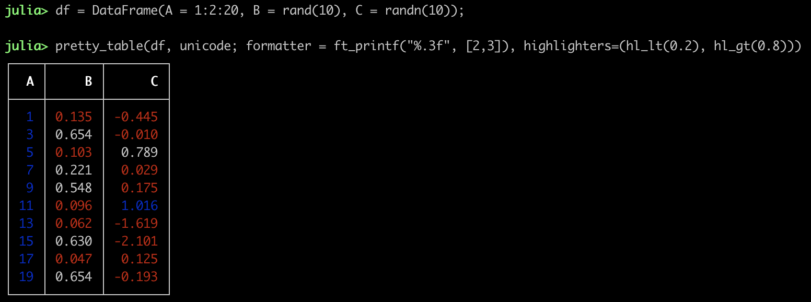
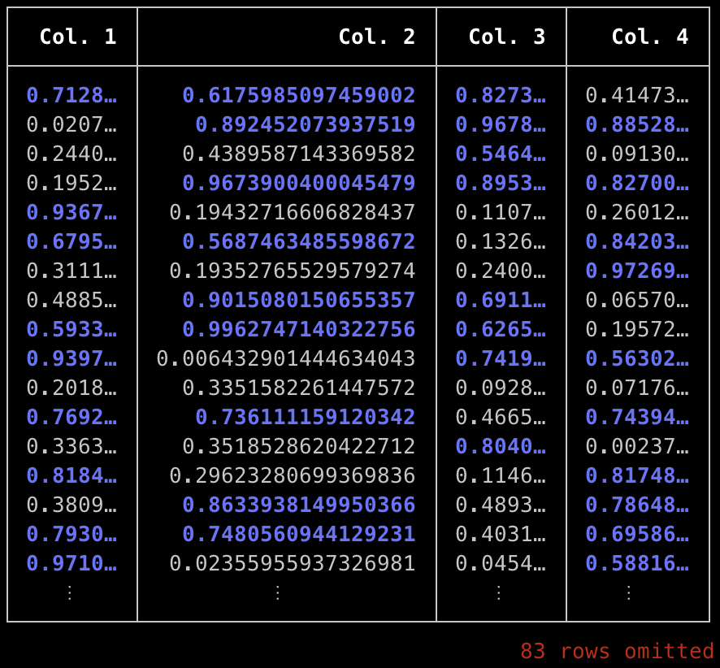
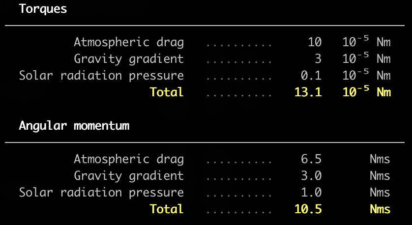

Text back-end examples
In the following, it is presented how the following matrix can be printed using the text back-end.
julia> data = Any[ 1 false 1.0 0x01 ;
2 true 2.0 0x02 ;
3 false 3.0 0x03 ;
4 true 4.0 0x04 ;
5 false 5.0 0x05 ;
6 true 6.0 0x06 ;]julia> pretty_table(data)
julia> pretty_table(data, border_crayon = crayon"yellow")
julia> pretty_table(data, tf = tf_simple, border_crayon = crayon"bold yellow", header_crayon = crayon"bold green")
julia> pretty_table(data, tf = tf_markdown, show_row_number = true)
The following example shows how formatters can be used to change how elements are printed.
julia> formatter = (v, i, j) -> begin
if j != 2
return isodd(i) ? i : 0
else
return v
end
end
julia> pretty_table(data, tf = tf_ascii_rounded, formatters = formatter)
The following example indicates how highlighters can be used to highlight the lowest and highest element in the data considering the columns 1, 3, and 5:
julia> h1 = Highlighter((data, i, j) -> j in (1, 3, 4) && data[i, j] == maximum(data[2:end, [1, 3, 4]]),
bold = true,
foreground = :blue )
julia> h2 = Highlighter( (data,i,j)->j in (1, 3, 4) && data[i, j] == minimum(data[2:end,[1, 3, 4]]),
bold = true,
foreground = :red )
julia> pretty_table(data, highlighters = (h1, h2))
Since this package has support to the API defined by Tables.jl, then many formats, e.g DataFrames.jl, can be pretty printed:
julia> using DataFrames
julia> df = DataFrame(A = 1:2:20, B = rand(10), C = rand(10))
julia> pretty_table(df, formatters = ft_printf("%.3f", [2, 3]), highlighters = (hl_lt(0.2), hl_gt(0.8)))
You can use body_hlines keyword to divide the table into interesting parts:
julia> pretty_table(data, body_hlines = [2, 4])
If you want to break lines inside the cells, then you can set the keyword linebreaks to true. Hence, the characters \n will cause a line break inside the cell.
julia> text = ["This line contains\nthe velocity [m/s]" 10.0;
"This line contains\nthe acceleration [m/s^2]" 1.0;
"This line contains\nthe time from the\nbeginning of the simulation" 10;]
julia> pretty_table(text, linebreaks = true, body_hlines = [1, 2, 3])
The keyword noheader can be used to suppres the header, which leads to a very simplistic, compact format.
julia> pretty_table(data, tf = tf_borderless, noheader = true)
In the following, it is shown how the filters can be used to print only the even rows and columns:
julia> A = [(0:1:10)'
(1:1:11)'
(2:1:12)'
(3:1:13)'
(4:1:14)']
julia> f_c(data, i) = i % 2 == 0
julia> f_r(data, i) = i % 2 == 0
julia> pretty_table(A, filters_row = (f_r,), filters_col = (f_c,), show_row_number = true)
By default, if the data is larger than the display, then it will be cropped to fit it. This can be changed by using the keywords crop and display_size.
julia> data = rand(100, 10); pretty_table(data, highlighters = (hl_gt(0.5),))
You can use the keyword columns_width to select the width of each column, so that the data is cropped to fit the available space.
julia> mat = rand(100, 4)
julia> pretty_table(mat,
highlighters = hl_gt(0.5),
columns_width = [7, -1, 7, 8],
compact_printing = false)
If you want to save the printed table to a file, you can do:
julia> open("output.txt", "w") do f
pretty_table(f,data)
endThis package can also be used to create data reports in text format:
julia> data = ["Torques" "" "" "";
"Atmospheric drag" "."^10 10 "10⁻⁵ Nm";
"Gravity gradient" "."^10 3 "10⁻⁵ Nm";
"Solar radiation pressure" "."^10 0.1 "10⁻⁵ Nm";
"Total" "."^10 13.1 "10⁻⁵ Nm";
"" "" "" ""
"Angular momentum" "" "" "";
"Atmospheric drag" "."^10 6.5 "Nms";
"Gravity gradient" "."^10 3.0 "Nms";
"Solar radiation pressure" "."^10 1.0 "Nms";
"Total" "."^10 10.5 "Nms"]
julia> pretty_table(data, tf = tf_borderless,
noheader = true,
cell_alignment = Dict((1, 1) => :l, (7, 1) => :l),
formatters = ft_printf("%10.1f", 2),
highlighters = (hl_cell([(1, 1); (7, 1)], crayon"bold"),
hl_col(2, crayon"dark_gray"),
hl_row([5, 11], crayon"bold yellow")),
body_hlines = [1,7],
body_hlines_format = Tuple('─' for _ = 1:4) )
The highlighters API can be used to dynamically highlight cells. In the next example, it is shown how the package ColorSchemes.jl can be integrated to build a table with a color map (the following example will be displayed better in a terminal that supports 24-bit color):
julia> using ColorSchemes
julia> data = [sind(x) * cosd(y) for x in 0:10:180, y in 0:10:180]
julia> hl = Highlighter((data, i, j) -> true,
(h, data, i, j) -> begin
color = get(colorschemes[:coolwarm], data[i, j], (-1, 1))
return Crayon(foreground = (round(Int, color.r * 255),
round(Int, color.g * 255),
round(Int, color.b * 255)))
end)
julia> pretty_table(data;
header = ["x = $(x)°" for x = 0:10:180],
row_names = ["y = $(y)°" for y = 0:10:180],
highlighters = hl,
formatters = ft_printf("%.2f"))